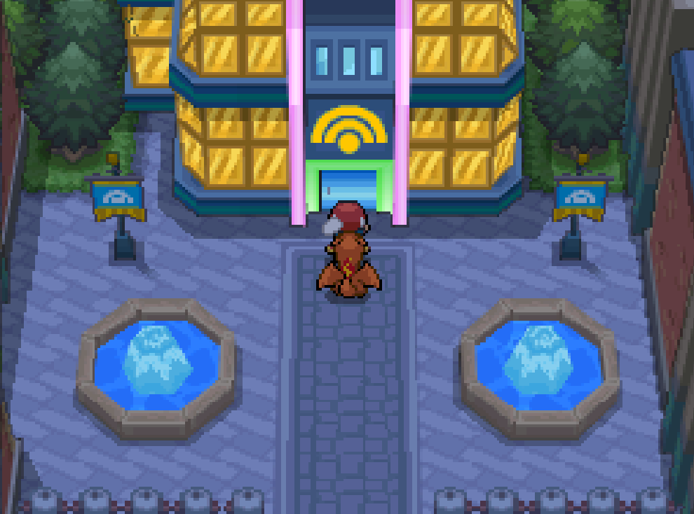
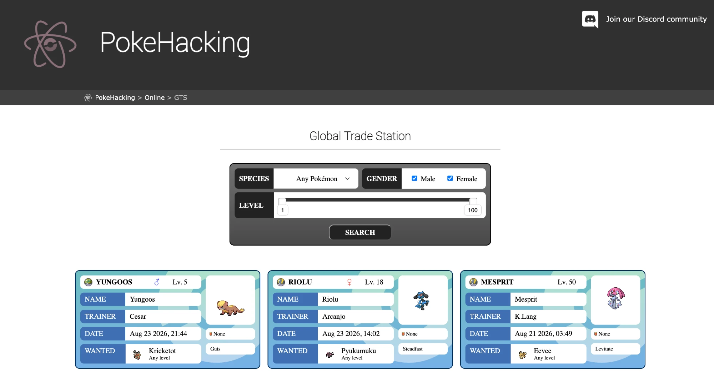
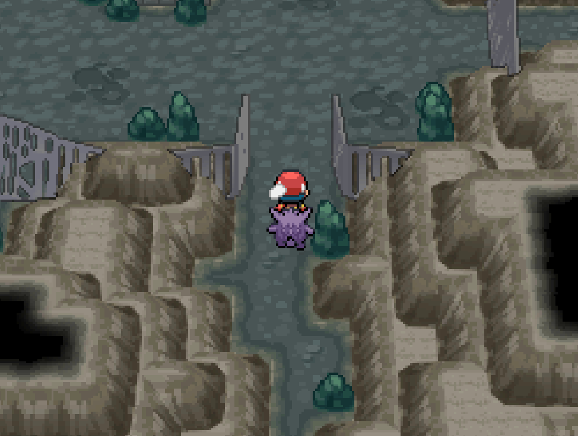
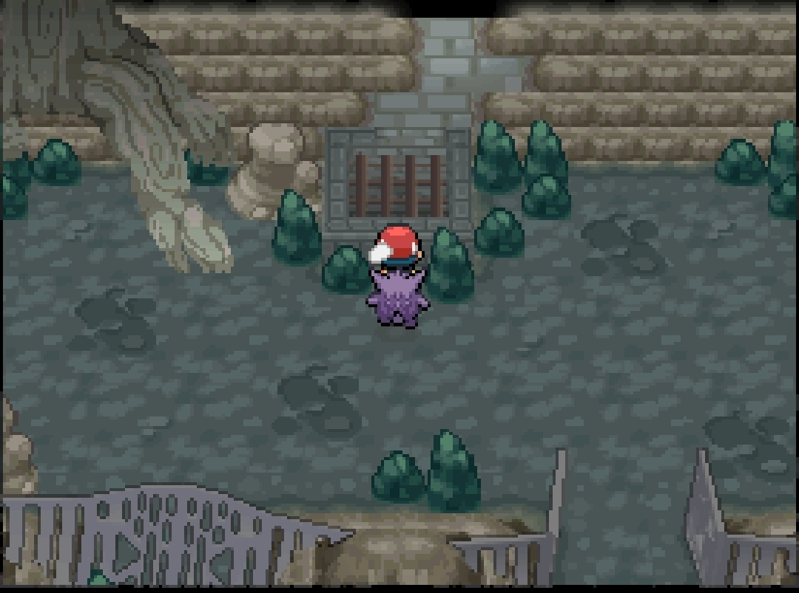

Trade evolution
In most single-player ROM hacks a trade evolution is a dead end. This one reopens both halves of it — one online, one offline — so nothing on the list below is unobtainable. Pick whichever you can actually run; either one evolves the same Pokémon.
Trade with other players — the GTS
The GTS building in Central City connects to a live Global Trade Station. Deposit a Pokémon, name what you want back, and other players can fill it — real trades with real people, so both sides evolve.

You can see what is currently up for offer in a browser before you go, at pokehacking.com/online/gts. Every listing names the species, its trainer, when it was deposited and what that player wants back, so you can tell whether the trade you need is already waiting.

Online trading only works on a ROM you patched yourself — see how to patch. It is also how the Kalos starters are meant to be completed: one is given at random, the other two come from the GTS.
Trade with yourself — Dardusk Cave
The bottom floor of Dardusk Cave holds a room that trades a Pokémon with itself, which is enough to trigger a trade evolution — no second player, no patched ROM. You need the Dungeon Key to get through the door.


It behaves like an ordinary trade, with the room standing in for the other player:
- The first time you interact, it takes a Pokémon from your party. Nothing comes back — that one is now the Pokémon the room is holding.
- Interact again and offer a second Pokémon. The first one comes back to you, traded, and anything that evolves on trade evolves now.
- Repeat as often as you like. Each visit hands over what you offer and returns whatever was being held.
The room's own warning: “…another Pokémon will have to pay the price.” That price is the one being held — there is always exactly one of yours on the other side, until the next trade brings it home.
So bring something you are happy to leave there, and finish on a Pokémon you do not mind parting with.
What needs a trade
Every evolution in the regional dex that a trade gates. 11 of them also need the right held item — those are the ones people usually get stuck on.
| From | Becomes | Held item |
|---|---|---|
| Spritzee | Aromatisse | plain trade |
| Swirlix | Slurpuff | plain trade |
| Machoke | Machamp | plain trade |
| Karrablast | Escavalier | plain trade |
| Shelmet | Accelgor | plain trade |
| Poliwhirl | Politoed | Kings Rock |
| Seadra | Kingdra | Dragon Scale |
| Haunter | Gengar | plain trade |
| Slowpoke | Slowking | Kings Rock |
| Phantump | Trevenant | plain trade |
| Pumpkaboo | Gourgeist | plain trade |
| Scyther | Scizor | Metal Coat |
| Clamperl | Huntail | Deep Sea Tooth |
| Clamperl | Gorebyss | Deep Sea Scale |
| Graveler | Golem | plain trade |
| Kadabra | Alakazam | plain trade |
| Onix | Steelix | Metal Coat |
| Boldore | Gigalith | plain trade |
| Gurdurr | Conkeldurr | plain trade |
| Rhydon | Rhyperior | Protector |
| Dusclops | Dusknoir | Reaper Cloth |
| Electabuzz | Electivire | Electirizer |
| Magmar | Magmortar | Magmarizer |
Feebas does not evolve by trade in this hack, so it is not on the list. Feed it a Wonder Meal at a Pokémon Center twice, then level it up, and it evolves into Milotic.